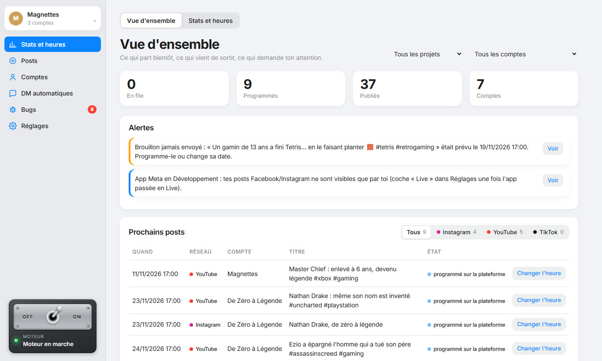
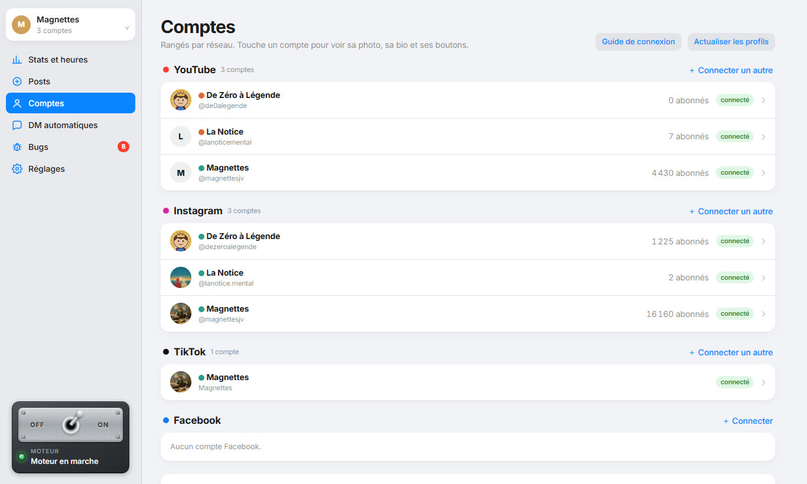
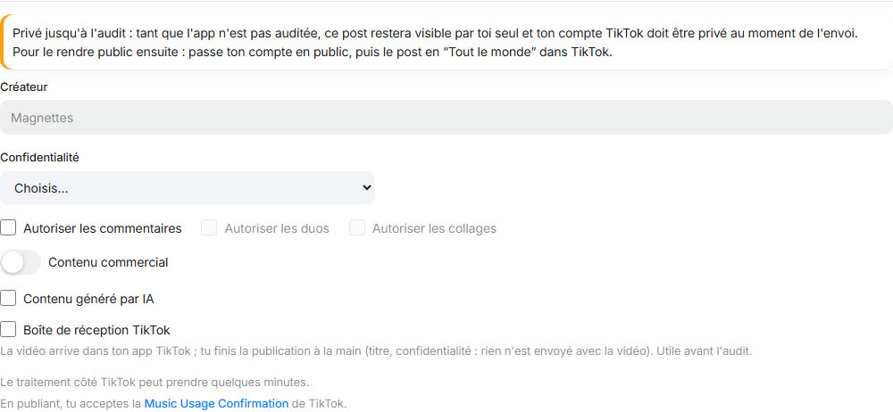

Upload Simulator 2027
Logiciel de bureau Windows pour les créateurs qui gèrent plusieurs comptes : il publie tes vidéos et tes posts photo en qualité d'origine sur YouTube, TikTok, Instagram et Facebook, tout de suite ou à l'heure que tu choisis.
A Windows desktop app for creators who run several accounts: it publishes your videos and photo posts in original quality to YouTube, TikTok, Instagram and Facebook, right away or at the time you choose.
Français
Ce que fait le logiciel
- Tu connectes tes propres comptes avec la connexion officielle de chaque plateforme (Google, TikTok, Instagram). Le logiciel ne te demande jamais ton mot de passe.
- Tu prépares un post une seule fois : fichier, texte et hashtags par réseau, puis tu choisis les comptes qui le reçoivent.
- Pour TikTok, tu choisis à chaque post la confidentialité, les commentaires, duos et collages, et la mention de contenu commercial. Rien n'est coché d'avance, et rien ne part sans ton clic.
- Tu publies tout de suite ou tu programmes à une date et une heure, pour chaque compte.
- Tu suis l'état de chaque envoi et les statistiques de tes propres posts, pour savoir à quelle heure publier.
Tes données
Le logiciel s'installe sur ton ordinateur. Tes réglages, ta planification, tes statistiques et tes jetons de connexion y restent, et les envois partent directement de ton ordinateur vers les plateformes. Une seule exception, que tu choisis d'utiliser : le relais en ligne (Cloudflare), qui publie tes Reels Instagram programmés quand ton ordinateur est éteint et envoie les DM automatiques. Il ne garde que le nécessaire, pour une durée limitée. Tu peux déconnecter un compte à tout moment, ce qui efface son jeton. Détails dans la politique de confidentialité.
Captures d'écran



L'obtenir
Upload Simulator 2027 est disponible pour les créateurs qui en font la demande. Écris à magnettespro@gmail.com : tu reçois le lien de téléchargement et le guide de connexion de tes comptes.
Contact
Éditeur : Magnettes — magnettespro@gmail.com
English
What it does
- You connect your own accounts with each platform's official sign-in (Google, TikTok, Instagram). The app never asks for your password.
- You prepare a post once: file, caption and hashtags per network, then you pick the accounts that receive it.
- For TikTok, you choose the privacy level, comments, duets and stitches, and the commercial content disclosure for every post. Nothing is pre-selected, and nothing is sent until you click.
- You publish right away or schedule a date and time, for each account.
- You follow the status of every upload and the statistics of your own posts, to know when to publish.
Your data
The app is installed on your computer. Your settings, schedule, statistics and sign-in tokens stay there, and uploads go straight from your computer to the platforms. One exception, which you choose to use: the online relay (Cloudflare), which publishes your scheduled Instagram Reels while your computer is off and sends automatic DMs. It keeps only what it needs, for a limited time. You can disconnect an account at any time, which deletes its token. See the Privacy Policy for details.
Screenshots
See the screenshots above: overview, connected accounts, TikTok post settings.
Get it
Upload Simulator 2027 is available to creators on request. Write to magnettespro@gmail.com to receive the download link and the account connection guide.
Contact
Publisher: Magnettes — magnettespro@gmail.com